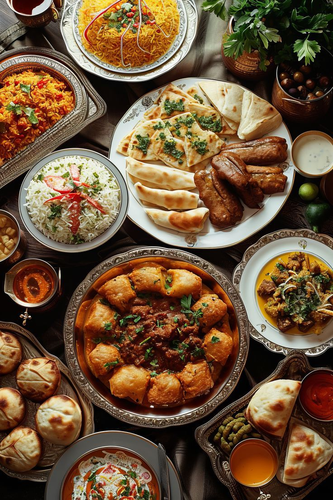
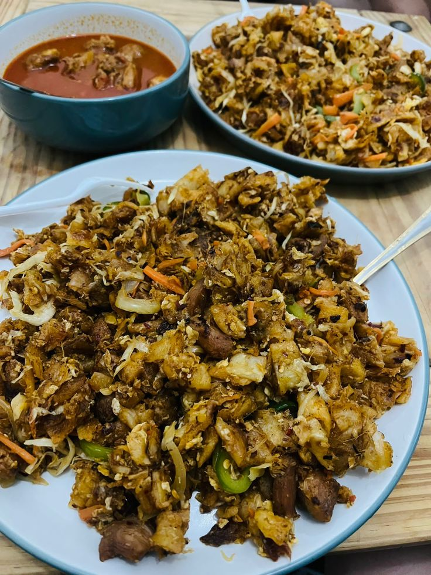
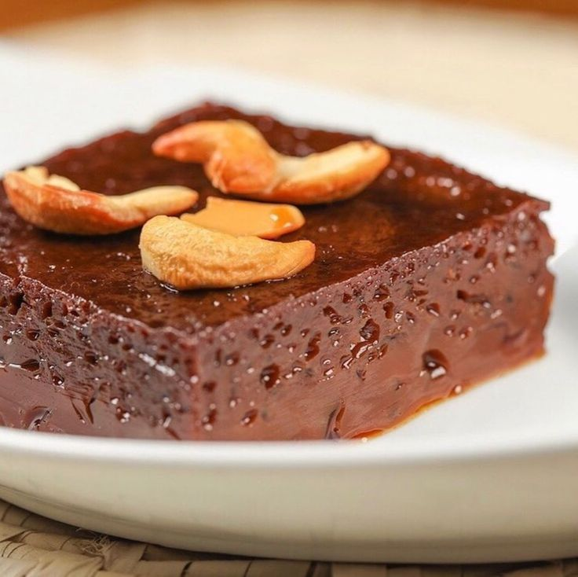
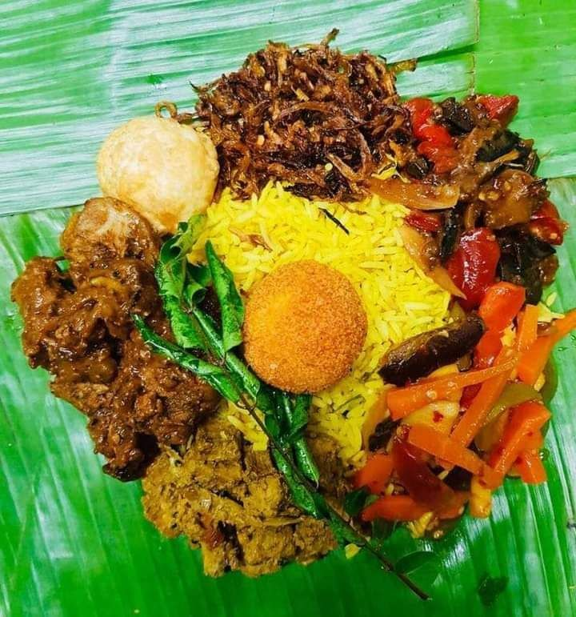

Welcome to Ceylon Cravings
Experience the vibrant flavors of Sri Lankan food, crafted with love and tradition.
Our Specialties
-  Kottu Roti - A popular street food made with chopped flatbread, vegetables, and spices.
-
 Hoppers - Bowl-shaped pancakes served with sambols and curries.
Hoppers - Bowl-shaped pancakes served with sambols and curries.
-  Watalappan - A coconut milk custard dessert, sweetened with jaggery.
-
 Fish Curry - Spicy and flavorful fish cooked in coconut milk and spices.
Fish Curry - Spicy and flavorful fish cooked in coconut milk and spices.
-
 Pol Sambol - A coconut relish mixed with chili and lime, perfect with rice.
Pol Sambol - A coconut relish mixed with chili and lime, perfect with rice.
-  Lamprais - Traditional rice dish wrapped in banana leaves, baked to perfection.